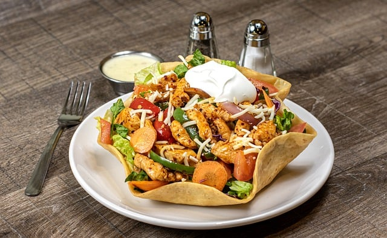

Sociedad Gastronómica de Texas en Madrid, un rincón donde la calidez del sur de los Estados Unidos se encuentra con la vibrante cultura española. Somos un grupo apasionado de amantes de la buena comida, la música y la camaradería, dedicados a compartir y celebrar la rica herencia culinaria de Texas.
Nuestra misión es ofrecer una experiencia auténtica que resalte los sabores únicos de la cocina texana, desde los clásicos barbacoa y chili hasta los deliciosos tacos y postres tradicionales. Nos reunimos regularmente para disfrutar de cenas temáticas, talleres de cocina y eventos culturales que fomentan la amistad y el intercambio de ideas.
En nuestra sociedad, cada miembro es parte de una gran familia, donde la diversidad y la inclusión son fundamentales. Creemos que la comida tiene el poder de unir a las personas, y estamos aquí para crear recuerdos inolvidables.
El Presidente de nuestra sociedad, Brian, estará encantado de recibirte. ¡Únete a nosotros y descubre el sabor de Texas en el corazón de Madrid!
